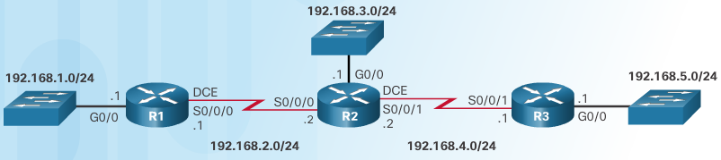
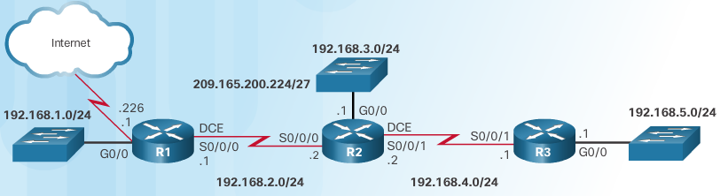
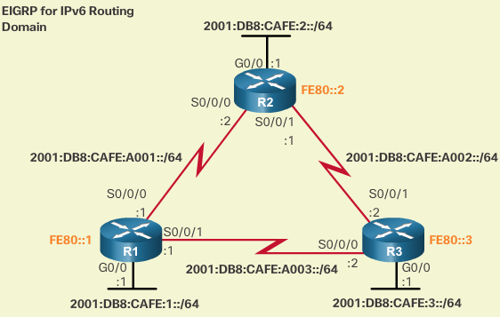
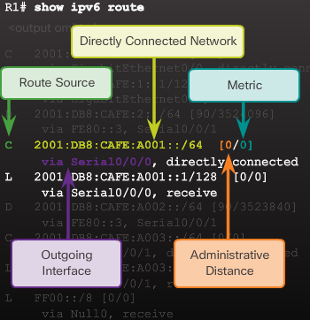
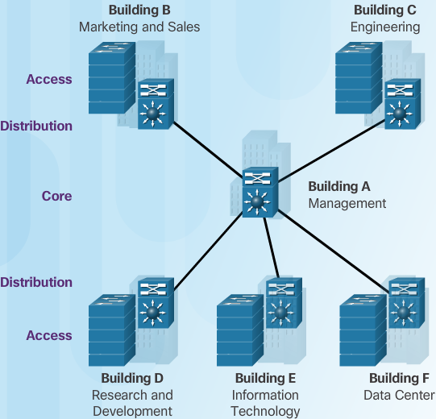
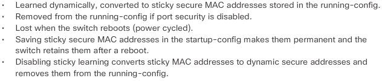
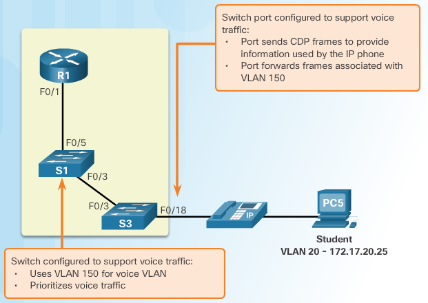
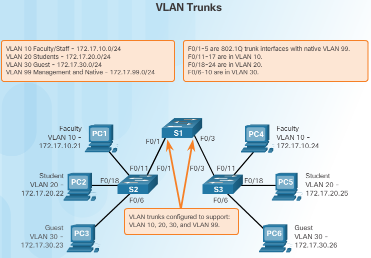
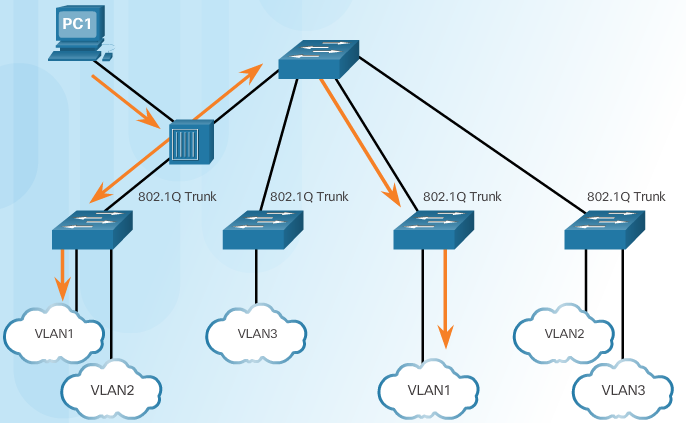

CCNA¶
Networking Fundamentals¶
Add fundamentals content here
Routing and Switching Fundamentals¶
Chapter 1 Routing Concepts¶
basic concepts¶
- RAM
- Running IOS Running config file IP routing tables, ARP tables, CDP info Packet buffer
- ROM
- Bootup instructions (System Bootstrap) Basic diagnostic software (POST) Limited IOS in case router cannot load full featured IOS(ROMMON)
- NVRAM
- Startup config file
- FLASH
- IOS
view their size via:
show versionbootup process lookup for ios
- flash memory
- TFTP server
- ROM
to change this order, change configuration register
Router’s 3 packet-forwarding mechanisms¶
- Process Switching
- An older packet forwarding mechanism still available for Cisco routers. When a packet arrives on an interface, it is forwarded to the control plane where the CPU matches the destination address with an entry in its routing table, and then determines the exit interface and forwards the packet. It is important to understand that the router does this for every packet, even if the destination is the same for a stream of packets. This process-switching mechanism is very slow and rarely implemented in modern networks.
- Fast switching
- This is a common packet forwarding mechanism which uses a fast-switching cache to store next-hop information. When a packet arrives on an interface, it is forwarded to the control plane where the CPU searches for a match in the fast-switching cache. If it is not there, it is process-switched and forwarded to the exit interface. The flow information for the packet is also stored in the fast-switching cache. If another packet going to the same destination arrives on an interface, the next-hop information in the cache is re-used without CPU intervention.
- Cisco Express Forwarding (CEF)
- CEF is the most recent and preferred Cisco IOS packet-forwarding mechanism. Like fast switching, CEF builds a Forwarding Information Base (FIB), and an adjacency table. However, the table entries are not packet-triggered like fast switching but change-triggered such as when something changes in the network topology. Therefore, when a network has converged, the FIB and adjacency tables contain all the information a router would have to consider when forwarding a packet. The FIB contains pre-computed reverse lookups, next hop information for routes including the interface and Layer 2 information. Cisco Express Forwarding is the fastest forwarding mechanism and the preferred choice on Cisco routers.
Loopback interfaces¶
Multiple loopback interfaces can be enabled on a router. The IPv4 address for each loopback interface must be unique and unused by any other interface.
configure loopback interface¶
Router(config)# interface loopback 0
Router(config-if)# ip address 10.0.0.1 255.255.255.0
Router(config-if)# exit
Filtering parameters¶
Used after the pipe are:
- section
- Shows entire section that starts with the filtering expression .. highlight:: R1# show running-config | section line vty
- include
- Includes all output lines that match the filtering expression .. highlight:: R1# show ip interface brief | include up
- exclude
- Excludes all output lines that match the filtering expression .. highlight:: R1# show ip interface brief | exclude unassigned
- begin
- hows all the output lines from a certain point, starting with the line that matches the filtering expression .. highlight:: R1# show ip route | begin Gateway R1# show running-config | begin line
History commands¶
- set/show history
R1# terminal history size 200 R1# show history
Show command examples¶
- show interfaces
TA(config)#do show interfaces GigabitEthernet0/0 is up, line protocol is up (connected) OB Hardware is CN Gigabit Ethernet, address is 0004.9ae8.b901 (bia 0004.9ae8.b901) Description: Link RTA G0/0 to SW1 G0/1 Internet address is 10.10.10.1/24 MTU 1500 bytes, BW 1000000 Kbit, DLY 10 usec, reliability 255/255, txload 1/255, rxload 1/255 Encapsulation ARPA, loopback not set Keepalive set (10 sec) Full-duplex, 100Mb/s, media type is RJ45 output flow-control is unsupported, input flow-control is unsupported ARP type: ARPA, ARP Timeout 04:00:00, Last input 00:00:08, output 00:00:05, output hang never Last clearing of "show interface" counters never Input queue: 0/75/0 (size/max/drops); Total output drops: 0 Queueing strategy: fifo Output queue :0/40 (size/max) 5 minute input rate 0 bits/sec, 0 packets/sec 5 minute output rate 0 bits/sec, 0 packets/sec 0 packets input, 0 bytes, 0 no buffer Received 0 broadcasts, 0 runts, 0 giants, 0 throttles 0 input errors, 0 CRC, 0 frame, 0 overrun, 0 ignored, 0 abort 0 watchdog, 1017 multicast, 0 pause input 0 input packets with dribble condition detected 0 packets output, 0 bytes, 0 underruns 0 output errors, 0 collisions, 2 interface resets 0 unknown protocol drops 0 babbles, 0 late collision, 0 deferred 0 lost carrier, 0 no carrier 0 output buffer failures, 0 output buffers swapped out
- show ip interface
SW1#show ip interface Vlan1 is up, line protocol is up Internet address is 10.10.10.2/24 Broadcast address is 255.255.255.255 Address determined by setup command MTU is 1500 bytes Helper address is not set Directed broadcast forwarding is disabled Outgoing access list is not set Inbound access list is not set Proxy ARP is enabled Local Proxy ARP is disabled Security level is default Split horizon is enabled ICMP redirects are always sent ICMP unreachables are always sent ICMP mask replies are never sent IP fast switching is disabled IP fast switching on the same interface is disabled IP Null turbo vector IP multicast fast switching is disabled IP multicast distributed fast switching is disabled IP route-cache flags are None Router Discovery is disabled IP output packet accounting is disabled IP access violation accounting is disabled TCP/IP header compression is disabled RTP/IP header compression is disabled Probe proxy name replies are disabled Policy routing is disabled Network address translation is disable WCCP Redirect outbound is disabled WCCP Redirect inbound is disabled WCCP Redirect exclude is disabled BGP Policy Mapping is disabled
- show ip int brief
RTA(config)#do show ip int brief Interface IP-Address OK? Method Status Protocol GigabitEthernet0/0 10.10.10.1 YES manual up up GigabitEthernet0/1 10.10.20.1 YES manual up up Vlan1 unassigned YES unset administratively down down
- show ip interface
RTA(config)#do show ip interface GigabitEthernet0/0 is up, line protocol is up (connected) Internet address is 10.10.10.1/24 Broadcast address is 255.255.255.255 Address determined by setup command MTU is 1500 bytes Helper address is not set Directed broadcast forwarding is disabled Outgoing access list is not set Inbound access list is not set Proxy ARP is enabled Security level is default Split horizon is enabled ICMP redirects are always sent ICMP unreachables are always sent ICMP mask replies are never sent IP fast switching is disabled IP fast switching on the same interface is disabled IP Flow switching is disabled IP Fast switching turbo vector IP multicast fast switching is disabled IP multicast distributed fast switching is disabled Router Discovery is disabled IP output packet accounting is disabled IP access violation accounting is disabled TCP/IP header compression is disabled RTP/IP header compression is disabled Probe proxy name replies are disabled Policy routing is disabled Network address translation is disabled BGP Policy Mapping is disabled Input features: MCI Check WCCP Redirect outbound is disabled WCCP Redirect inbound is disabled WCCP Redirect exclude is disabled GigabitEthernet0/1 is up, line protocol is up (connected) Internet address is 10.10.20.1/24 Broadcast address is 255.255.255.255 Address determined by setup command MTU is 1500 bytes Helper address is not set Directed broadcast forwarding is disabled Outgoing access list is not set Inbound access list is not set Proxy ARP is enabled Security level is default Split horizon is enabled ICMP redirects are always sent ICMP unreachables are always sent ICMP mask replies are never sent IP fast switching is disabled IP fast switching on the same interface is disabled IP Flow switching is disabled IP Fast switching turbo vector IP multicast fast switching is disabled IP multicast distributed fast switching is disabled Router Discovery is disabled IP output packet accounting is disabled IP access violation accounting is disabled TCP/IP header compression is disabled RTP/IP header compression is disabled Probe proxy name replies are disabled Policy routing is disabled Network address translation is disabled BGP Policy Mapping is disabled Input features: MCI Check WCCP Redirect outbound is disabled WCCP Redirect inbound is disabled WCCP Redirect exclude is disabled Vlan1 is administratively down, line protocol is down Internet protocol processing disabled
- show ip route
RTA(config)#do show ip route Codes: L - local, C - connected, S - static, R - RIP, M - mobile, B - BGP D - EIGRP, EX - EIGRP external, O - OSPF, IA - OSPF inter area N1 - OSPF NSSA external type 1, N2 - OSPF NSSA external type 2 E1 - OSPF external type 1, E2 - OSPF external type 2, E - EGP i - IS-IS, L1 - IS-IS level-1, L2 - IS-IS level-2, ia - IS-IS inter area * - candidate default, U - per-user static route, o - ODR P - periodic downloaded static route -- Gateway of last resort is not set -- 10.0.0.0/8 is variably subnetted, 4 subnets, 2 masks C 10.10.10.0/24 is directly connected, GigabitEthernet0/0 L 10.10.10.1/32 is directly connected, GigabitEthernet0/0 C 10.10.20.0/24 is directly connected, GigabitEthernet0/1 L 10.10.20.1/32 is directly connected, GigabitEthernet0/1
- show ip route connected
RTA(config)#do show ip route connected C 10.10.10.0/24 is directly connected, GigabitEthernet0/0 C 10.10.20.0/24 is directly connected, GigabitEthernet0/1
ARP - Neighbor Advertisement/Sollicitation¶
A similar process is used for IPv6 packets. Instead of the ARP process, IPv6 address resolution uses ICMPv6 Neighbor Solicitation and Neighbor Advertisement messages. IPv6-to-MAC address mapping are kept in a table similar to the ARP cache, called the neighbor cache.
MAC addresses on Serial Interfaces¶
When the interface is a point-to-point (P2P) serial connection, the router encapsulates the IPv4 packet into the proper data link frame format used by the exit interface (HDLC, PPP, etc.). Because there are no MAC addresses on serial interfaces, R2 sets the data link destination address to an equivalent of a broadcast. The router does not need to know any info about the destination L2 address, so the router just sends the frame out the corresponding serial interface. No source address is required on a P2P serial connection
HDLC frames can be transmitted over synchronous or asynchronous serial communication links. Those links have no mechanism to mark the beginning or end of a frame, so the beginning and end of each frame has to be identified. This is done by using a frame delimiter, or flag, which is a unique sequence of bits that is guaranteed not to be seen inside a frame. This sequence is ‘01111110’, or, in hexadecimal notation, 0x7E. Each frame begins and ends with a frame delimiter. A frame delimiter at the end of a frame may also mark the start of the next frame. A sequence of 7 or more consecutive 1-bits within a frame will cause the frame to be aborted.
| Flag 7E | Address | Control | Protocol | Data | FCS | Flag 7E | |
| 8 bits | 8 bits | 8 bits | 16 bits | ~ length 0 or x*8 | 16b | 8 bits | |
The Address field is used to specify the type of packet contained in the cHDLC frame; 0x0F for Unicast and 0x8F for Broadcast packets. The Control field is always set to zero (0x00). The Protocol Code field is used to specify the protocol type encapsulated within the cHDLC frame (e.g. 0x0800 for Internet Protocol).
Packet Forwarding Decision Process¶
Directly Connected Interface? Yes -> Check ARP cache (ARP request if necessary) and forward to host on local subnet Remote Network? Yes -> Encapsulate the frame and forward out of the exit interface to the next hop else Gateway of last resort or drop
Routing BEST PATH selection¶
- RIP
- Routing Information Protocol - Hop count
- OSPF
- Open Shortest Path First - Cisco’s cost based on CUMULATIVE bandwidth from source to destination
- EIGRP
- Enhanced Interior Gateway Routing Protocol - Bandwidth, delay, load, reliability (bladder)
Note
two or more paths with identical metrics = LOAD BALANCING
Note
Equal cost load balancing can be cfd to use both dynamic routing protocols and static routes ONLY EIGRP support UNEQUAL COST LOAD BALANCING
ADMINISTRATIVE DISTANCE¶
For example, if both RIP and EIGRP are configured on a router, both routing protocols may learn of the same destination network. However, each routing protocol may decide on a different path to reach the destination based on that routing protocol’s metrics. RIP chooses a path based on hop count, whereas EIGRP chooses a path based on its composite metric. How does the router know which route to use?
Cisco IOS uses what is known as the administrative distance (AD) to determine the route to install into the IP routing table. The AD represents the “trustworthiness” of the route; the lower the AD, the more trustworthy the route source. For example, a static route has an AD of 1, whereas an EIGRP-discovered route has an AD of 90. Given two separate routes to the same destination, the router chooses the route with the lowest AD. When a router has the choice of a static route and an EIGRP route, the static route takes precedence.
Default Distance Value Table
This table lists the administrative distance default values of the protocols that Cisco supports:
Routing Protocol Administrative distance Directly connected interface 0 Static route out an interface 1 Static route to next-hop address 1 DMNR - Dynamic Mobile Network Routing 3 EIGRP summary route 5 External BGP 20 Internal EIGRP 90 IGRP 100 OSPF 110 IS-IS 115 Routing Information Protocol (RIP) 120 Exterior Gateway Protocol (EGP) 140 On Demand Routing (ODR) 160 External EIGRP 170 Internal BGP 200 Next Hop Resolution Protocol (NHRP) 250 Floating Static Route (ex. DHCP-learned) 254 Unknown (Others) 255 Note
If the administrative distance is 255, the router does not believe the source of that route and does not install the route in the routing table. Since IOS 12.2, the administrative distance of a static route with an exit interface is 1. Only the interface itself has an administrative distance of 0, since a route cannot have a distance of less than 1. Directly connected routes have an administrative distance of 0.
Changing Administrative Distance¶
When you use route redistribution, occasionally you need to modify the administrative distance of a protocol so that it takes precedence. For example, if you want the router to select RIP-learned routes (default value 120) rather than IGRP-learned routes (default value 100) to the same destination, you must increase the administrative distance for IGRP to 120+, or decrease the administrative distance of RIP to a value less than 100.
You can modify the administrative distance of a protocol through the distance command in the routing process subconfiguration mode. This command specifies that the administrative distance is assigned to the routes learned from a particular routing protocol. You need to use this procedure generally when you migrate the network from one routing protocol to another, and the latter has a higher administrative distance. However, a change in the administrative distance can lead to routing loops and black holes.
Warning
use caution if you change the administrative distance.
R1(config)#router eigrp 10
R1(config-router)#distance eigrp xx yy
where xx representes the new value of internal administrative distance and yy representes the new value of the external administrative distance.
example of changing AD for rip¶
Here is an example that shows two routers, R1 and R2, connected through Ethernet. The loopback interfaces of the routers are also advertised with RIP and IGRP on both the routers. You can observe that the IGRP routes are preferred over the RIP routes in the routing table because the administrative distance is 100.
R1#show ip route
Gateway of last resort is not set
172.16.0.0/24 is subnetted, 1 subnets
C 172.16.1.0 is directly connected, Ethernet0
I 10.0.0.0/8 [100/1600] via 172.16.1.200, 00:00:01, Ethernet0
C 192.168.1.0/24 is directly connected, Loopback0
R2#show ip route
Gateway of last resort is not set
172.16.0.0/24 is subnetted, 1 subnets
C 172.16.1.0 is directly connected, Ethernet0
C 10.0.0.0/8 is directly connected, Loopback0
I 192.168.1.0/24 [100/1600] via 172.16.1.100, 00:00:33,
In order to enable the router to prefer RIP routes to IGRP, configure the distance command on R1 like this:
R1(config)#router rip
R1(config-router)#distance 90
Now look at the routing table. The routing table shows that the router prefers the RIP routes. The router learns RIP routes with an administrative distance of 90, although the default is 120.
Note
The new administrative distance value is relevant only to the routing process of a single router (in this case R1). R2 still has IGRP routes in the routing table.
R1#show ip route
Gateway of last resort is not set
172.16.0.0/24 is subnetted, 1 subnets
C 172.16.1.0 is directly connected, Ethernet0
R 10.0.0.0/8 [90/1] via 172.16.1.200, 00:00:16, Ethernet0
C 192.168.1.0/24 is directly connected, Loopback0
R2#show ip route
Gateway of last resort is not set
172.16.0.0/24 is subnetted, 1 subnets
C 172.16.1.0 is directly connected, Ethernet0
C 10.0.0.0/8 is directly connected, Loopback0
I 192.168.1.0/24 [100/1600] via 172.16.1.100, 00:00:33,
Note
There are no general guidelines to assign administrative distances because each network has varied requirements. You must determine a reasonable matrix of administrative distances for the network as a whole. Similarly, a directly connected route with an AD of 0 takes precedence over a static route with an AD of 1.
Other applications of A.D.¶
One common reason to change the administrative distance of a route is when you use Static Routes to backup an existing IGP route. This is normally used to bring up a backup link when the primary fails.
For example, assume that you use the routing table from R1. However, in this case, there is also an ISDN line that you can use as a backup if the primary connection fails. Here is an example of a Floating Static for this route:
ip route 10.0.0.0 255.0.0.0 Dialer 1 250
!--- Note: The Administrative Distance is set to 250.
If the Ethernet interfaces fail, or if you manually bring down the Ethernet interfaces, the floating static route is installed into the routing table. All traffic destined for the 10.0.0.0/8 network is then routed out of the Dialer 1 interface and over the backup link. The routing table appears similar to this after the failure:
R1#show ip route
Gateway of last resort is not set
172.16.0.0/24 is subnetted, 1 subnets
C 172.16.1.0 is directly connected, Ethernet0
S 10.0.0.0/8 is directly connected, Dialer1
C 192.168.1.0/24 is directly connected, Loopback0
Directly Connected n Remote Network Routes¶
- Directly connected routes
- These routes come from the active router interfaces. Routers add a directly connected route when an interface is configured with an IP address and is activated.
- Remote routes
- These are remote networks connected to other routers. Routes to these networks can either be statically configured or dynamically learned through dynamic routing protocols.
The sources of the routing table entries are identified by a code. The code identifies how the route was learned. For instance, common codes include:
- L - Identifies the address assigned to a router’s interface. This allows the router to efficiently determine when it receives a packet for the interface instead of being forwarded.
- C - Identifies a directly connected network.
- S - Identifies a static route created to reach a specific network.
- D - Identifies a dynamically learned network from another router using EIGRP.
- O - Identifies a dynamically learned network from another router using the OSPF routing protocol.
D 10.1.1.0/24 [90/2170112] via 209.165.200.226, 00:00:05, Serial0/0/0
- Route source - Identifies how the route was learned.
- Destination network - Identifies the address of the remote network.
- Administrative distance - Identifies the trustworthiness of the route source. Lower values indicate preferred route source.
- Metric - Identifies the value assigned to reach the remote network. Lower values indicate preferred routes.
- Next-hop - Identifies the IPv4 address of the next router to forward the packet to.
- Route timestamp - Identifies how much time has passed since the route was learned.
- Outgoing interface - Identifies the exit interface to use to forward a packet toward the final destination.
The IP routing process¶
IP routing example using two hosts and one router
User on Host_A pinged Host_B’s IP address. Routing doesn’t get any simpler than this, but it still involves a lot of steps, so let’s work through them now:
Internet Control Message Protocol (ICMP) creates an echo request payload, which is simply the alphabet in the data field.
ICMP hands that payload to Internet Protocol (IP), which then creates a packet. At a minimum, this packet contains an IP source address, an IP destination address, and a Protocol field with 01h. Don’t forget that Cisco likes to use 0x in front of hex characters, so this could also look like 0x01. This tells the receiving host to whom it should hand the payload when the destination is reached—in this example, ICMP.
Once the packet is created, IP determines whether the destination IP address is on the local network or a remote one.
Since IP has determined that this is a remote request, the packet must be sent to the default gateway so it can be routed to the remote network. The Registry in Windows is parsed to find the configured default gateway.
The default gateway of Host_A is configured to 172.16.10.1. For this packet to be sent to the default gateway, the hardware address of the router’s interface Ethernet 0, which is configured with the IP address of 172.16.10.1, must be known. Why? So the packet can be handed down to the Data Link layer, framed, and sent to the router’s interface that’s connected to the 172.16.10.0 network. Because hosts communicate only via hardware addresses on the local LAN, it’s important to recognize that for Host_A to communicate to Host_B, it has to send packets to the Media Access Control (MAC) address of the default gateway on the local network. MAC addresses are always local on the LAN and never go through and past a router.
Next, the Address Resolution Protocol (ARP) cache of the host is checked to see if the IP address of the default gateway has already been resolved to a hardware address. If it has, the packet is then free to be handed to the Data Link layer for framing. Remember that the hardware destination address is also handed down with that packet.
If the hardware address isn’t already in the ARP cache of the host, an ARP broadcast will be sent out onto the local network to search for the 172.16.10.1 hardware address. The router then responds to the request and provides the hardware address of Ethernet 0, and the host caches this address.
Once the packet and destination hardware address are handed to the Data Link layer, the LAN driver is used to provide media access via the type of LAN being used, which is Ethernet in this case. A frame is then generated, encapsulating the packet with control information. Within that frame are the hardware destination and source addresses plus, in this case, an Ether-Type field, which identifies the specific Network layer protocol that handed the packet to the Data Link layer. In this instance, it’s IP. At the end of the frame is something called a Frame Check Sequence (FCS) field that houses the result of the cyclic redundancy check (CRC). The frame would look something like what I’ve detailed in Figure 9.3. It contains Host A’s hardware (MAC) address and the destination hardware address of the default gateway. It does not include the remote host’s MAC address—remember that!
Once the frame is completed, it’s handed down to the Physical layer to be put on the physical medium (in this example, twisted-pair wire) one bit at a time.
Every device in the collision domain receives these bits and builds the frame. They each run a CRC and check the answer in the FCS field. If the answers don’t match, the frame is discarded:
* If the CRC matches, then the hardware destination address is checked to see if it matches (which, in this example, is the router’s interface Ethernet 0). * If it’s a match, then the Ether-Type field is checked to find the protocol used at the Network layer.
The packet is pulled from the frame, and what is left of the frame is discarded. The packet is handed to the protocol listed in the Ether-Type field—it’s given to IP.
IP receives the packet and checks the IP destination address. Since the packet’s destination address doesn’t match any of the addresses configured on the receiving router itself, the router will look up the destination IP network address in its routing table.
The routing table must have an entry for the network 172.16.20.0 or the packet will be discarded immediately and an ICMP message will be sent back to the originating device with a destination network unreachable message.
If the router does find an entry for the destination network in its table, the packet is switched to the exit interface—in this example, interface Ethernet 1. The following output displays the Lab_A router’s routing table. The C means “directly connected.” No routing protocols are needed in this network since all networks (all two of them) are directly connected
Lab_A>sh ip route C 172.16.10.0 is directly connected, Ethernet0 L 172.16.10.1/32 is directly connected, Ethernet0 C 172.16.20.0 is directly connected, Ethernet1 L 172.16.20.1/32 is directly connected, Ethernet1
The router packet-switches the packet to the Ethernet 1 buffer.
The Ethernet 1 buffer needs to know the hardware address of the destination host and first checks the ARP cache. If the hardware address of Host_B has already been resolved and is in the router’s ARP cache, then the packet and the hardware address will be handed down to the Data Link layer to be framed.let’s take a look at the ARP cache on the Lab_A router by using the show ip arp command
Lab_A#sh ip arp Protocol Address Age(min) Hardware Addr Type Interface Internet 172.16.20.1 - 00d0.58ad.05f4 ARPA Ethernet1 Internet 172.16.20.2 3 0030.9492.a5dd ARPA Ethernet1 Internet 172.16.10.1 - 00d0.58ad.06aa ARPA Ethernet0 Internet 172.16.10.2 12 0030.9492.a4ac ARPA Ethernet0
- Now if the hardware address hasn’t already been resolved, the router will send an ARP request out E1 looking for the 172.16.20.2 hardware address. Host_B responds with its hardware address, and the packet and destination hardware addresses are then both sent to the Data Link layer for framing.
The Data Link layer creates a frame with the destination and source hardware addresses, Ether-Type field, and FCS field at the end. The frame is then handed to the Physical layer to be sent out on the physical medium one bit at a time.
Host_B receives the frame and immediately runs a CRC. If the result matches the information in the FCS field, the hardware destination address will then be checked next. If the host finds a match, the Ether-Type field is then checked to determine the protocol that the packet should be handed to at the Network layer—IP in this example.
At the Network layer, IP receives the packet and runs a CRC on the IP header. If that passes, IP then checks the destination address. Since a match has finally been made, the Protocol field is checked to find out to whom the payload should be given.
The payload is handed to ICMP, which understands that this is an echo request. ICMP responds to this by immediately discarding the packet and generating a new payload as an echo reply.
A packet is then created including the source and destination addresses, Protocol field, and payload. The destination device is now Host_A.
IP then checks to see whether the destination IP address is a device on the local LAN or on a remote network. Since the destination device is on a remote network, the packet needs to be sent to the default gateway.
The default gateway IP address is found in the Registry of the Windows device, and the ARP cache is checked to see if the hardware address has already been resolved from an IP address.
Once the hardware address of the default gateway is found, the packet and destination hardware addresses are handed down to the Data Link layer for framing.
The Data Link layer frames the packet of information and includes the following in the header
- The destination and source hardware addresses
- The Ether-Type field with 0x0800 (IP) in it
- The FCS field with the CRC result in tow
The frame is now handed down to the Physical layer to be sent out over the network medium one bit at a time.
The router’s Ethernet 1 interface receives the bits and builds a frame. The CRC is run, and the FCS field is checked to make sure the answers match.
Once the CRC is found to be okay, the hardware destination address is checked. Since the router’s interface is a match, the packet is pulled from the frame and the Ether-Type field is checked to determine which protocol the packet should be delivered to at the Network layer.
The protocol is determined to be IP, so it gets the packet. IP runs a CRC check on the IP header first and then checks the destination IP address
Warning
IP does not run a complete CRC as the Data Link layer does—it only checks the header for errors.
Since the IP destination address doesn’t match any of the router’s interfaces, the routing table is checked to see whether it has a route to 172.16.10.0. If it doesn’t have a route over to the destination network, the packet will be discarded immediately. I want to take a minute to point out that this is exactly where the source of confusion begins for a lot of administrators because when a ping fails, most people think the packet never reached the destination host. But as we see here, that’s not always the case. All it takes for this to happen is for even just one of the remote routers to lack a route back to the originating host’s network and— poof!—the packet is dropped on the return trip, not on its way to the host!
Note
Just a quick note to mention that when (and if) the packet is lost on the way back to the originating host, you will typically see a request timed-out message because it is an unknown error. If the error occurs because of a known issue, such as if a route is not in the routing table on the way to the destination device, you will see a destination unreachable message. This should help you determine if the problem occurred on the way to the destination or on the way back.
In this case, the router happens to know how to get to network 172.16.10.0—the exit interface is Ethernet 0—so the packet is switched to interface Ethernet 0.
The router then checks the ARP cache to determine whether the hardware address for 172.16.10.2 has already been resolved.
Since the hardware address to 172.16.10.2 is already cached from the originating trip to Host_B, the hardware address and packet are then handed to the Data Link layer.
The Data Link layer builds a frame with the destination hardware address and source hardware address and then puts IP in the Ether-Type field. A CRC is run on the frame and the result is placed in the FCS field.
The frame is then handed to the Physical layer to be sent out onto the local network one bit at a time.
The destination host receives the frame, runs a CRC, checks the destination hardware address, then looks into the Ether-Type field to find out to whom to hand the packet.
IP is the designated receiver, and after the packet is handed to IP at the Network layer, it checks the Protocol field for further direction. IP finds instructions to give the payload to ICMP, and ICMP determines the packet to be an ICMP echo reply.
ICMP acknowledges that it has received the reply by sending an exclamation point (!) to the user interface. ICMP then attempts to send four more echo requests to the destination host.
The key point here is that if you had a much larger network, the process would be the same. It’s just that the larger the internetwork, the more hops the packet goes through before it finds the destination host.
Note
It’s super-important to remember that when Host_A sends a packet to Host_B, the destination hardware address used is the default gateway’s Ethernet interface. Why? Because frames can’t be placed on remote networks—only local networks. So packets destined for remote networks must go through the default gateway.
To see which packet switching method your router interface is using, use the command show ip interface.
Chapter 2 Static Routes¶
ipv4 syntax¶
Router(config)# ip route network mask { next-hop-ip | exit-intf }
A static route is identified in the routing table with the code ‘S’.
To configure an IPv4 default static route, use the following command:
Router(config)# ip route 0.0.0.0 0.0.0.0 { exit-intf | next-hop-ip }
combination of exit interface and next hop¶
R2(config)# ip route 192.168.2.0 255.255.255.0 s0/0/1 192.168.1.1
When to Use Static Routes¶
Static routing has three primary uses:
# Providing ease of routing table maintenance in smaller networks that are not expected to grow significantly. # Routing to and from stub networks. A STUB NETWORK is a network accessed by a single route, and the router has ONLY ONE NEIGHBOR. # Using a single default route to represent a path to any network that does not have a more specific match with another route in the routing table.
benefits:
- Are not advertised over the network, resulting in better security
- Use less bandwidth than dynamic routing protocols
- Use known paths to send data
Note
Default routes are used to send traffic to any destination beyond the next upstream router.
- Use static routes to…
- Connect to a specific network
- Connect a stub router
- Summarize routing table entries
- Create a backup route
Default static route¶
ip route 0.0.0.0 0.0.0.0 nexthopip | exitif
Note
Default static routes are used when no other routes in the routing table match the packet destination IP address. In other words, when a more specific match does not exist. A common use is when connecting a company’s edge router to the ISP network. When a router has only one other router to which it is connected. In this situation, the router is known as a stub router.
Summary static route¶
Representing multiple networks
172.20.0.0/16 172.21.0.0/16 172.22.0.0/16 172.23.0.0/16 as 172.20.0.0/14
ip route 172.20.0.0 255.252.0.0 nexthopip | exitif
Floating static route¶
Another type of static route is a floating static route. Floating static routes are static routes that are used to provide a backup path to a primary static or dynamic route, in the event of a link failure.
Note
The floating static route is only used when the primary route is not available.
To accomplish this, the floating static route is configured with a higher administrative distance than the primary route. The administrative distance represents the trustworthiness of a route. If multiple paths to the destination exist, the router will choose the path with the lowest administrative distance.
The next hop can be identified by an IP address, exit interface, or both. How the destination is specified creates one of the three following route types:
- Next-hop route
- Only the next-hop IP address is specified
- Directly connected static route
- Only the router exit interface is specified
- Fully specified static route
- The next-hop IP address and exit interface are specified
ip route 172.16.1.0 255.255.255.0 G0/1 172.16.2.2
Fully Specified Static Route¶
In a fully specified static route, both the exit interface and the next-hop IP address are specified. This is another type of static route that is used in older IOSs, prior to CEF.
Note
This form of static route is used when the exit interface is a multi-access interface and it is necessary to explicitly identify the next hop.
The next hop must be directly connected to the specified exit interface.
example¶
PC2
|
|_
172.16.1.0/24 |__|
|
|
G0/0|.1
_|__
(_R2_)
S0/0/0 /.2 .2\ S0/0/1
/ \ DCE
172.16.2.0/24/ \/\
/ \ 192.168.1.0/24
.1/ \.1
__ /__S0/0/0 S0/0/1_\ __
PC1------|__|---------(_R1_) DCE (_R3_)-----|__|----PC3
G0/0 .1 .1 G0/0
172.16.3.0/24 192.168.2.0/24
Suppose that the network link between R1 and R2 is an Ethernet link and that the GigabitEthernet 0/1 interface of R1 is connected to that network, as shown in Figure 1. CEF is not enabled. To eliminate the recursive lookup,(map a next hop ip to what interface that is = if CEF not enabled) a directly connected static route can be implemented using the following command:
R1(config)# ip route 192.168.2.0 255.255.255.0 GigabitEthernet 0/1
However, this may cause unexpected or inconsistent results. The difference between an Ethernet multi-access network and a point-to-point serial network is that a point-to-point serial network has only one other device on that network, the router at the other end of the link. With Ethernet networks, there may be many different devices sharing the same multi-access network, including hosts and even multiple routers. By only designating the Ethernet exit interface in the static route, the router will not have sufficient information to determine which device is the next-hop device.
R1 knows that the packet needs to be encapsulated in an Ethernet frame and sent out the GigabitEthernet 0/1 interface. However, R1 does not know the next-hop IPv4 address; therefore, it cannot determine the destination MAC address for the Ethernet frame.
Depending upon the topology and the configurations on other routers, this static route may or may not work. It is recommended that when the exit interface is an Ethernet network, that a fully specified static route is used, including both the exit interface and the next-hop address.
R3(config)# ip route 172.16.1.0 255.255.255.0 s0/0/1 192.168.1.2
As shown in Figure 2, when forwarding packets to R2, the exit interface is GigabitEthernet 0/1 and the next-hop IPv4 address is 172.16.2.2.
Note
With the use of CEF, a fully specified static route is no longer necessary. A static route using a next-hop address should be used.
R1(config)# ip route 0.0.0.0 0.0.0.0 172.16.2.2
R1#show ip route static
R1(config)#do show ip route static
172.31.0.0/16 is variably subnetted, 7 subnets, 5 masks
S 172.31.0.0/24 [1/0] via 172.31.1.193
S 172.31.1.128/26 [1/0] via 172.31.1.193
S 172.31.1.196/30 [1/0] via 172.31.1.193
R2(config)#ip route 172.31.1.0 255.255.255.128 S0/0/0
%Default route without gateway, if not a point-to-point interface, may impact performance
R2#show ip route ?
WORD Network to display information about or hostname
bgp Border Gateway Protocol (BGP)
connected Connected
eigrp Enhanced Interior Routing Protocol (EIGRP)
ospf Open Shortest Path First (OSPF)
rip Routing Information Protocol (RIP)
static Static routes
summary Summary of all routes
| Output Modifiers
<cr>
R2#show ip route connected
C 172.31.0.0/24 is directly connected, GigabitEthernet0/0
C 172.31.1.192/30 is directly connected, Serial0/0/0
C 172.31.1.196/30 is directly connected, Serial0/0/1
R3(config)#ip route 0.0.0.0 0.0.0.0 Serial 0/0/1
%Default route without gateway, if not a point-to-point interface, may impact performance
R3(config)#
ipv6 static routing¶
R1(config)# ipv6 unicast-routing
R1(config)# show ipv6 route
R1#ping ipv6 2001.DB8:ACAD:4::2
R1(config)# ipv6 route 2001.DB8:ACAD:2::/64 2001.DB8:ACAD:4::2
R1(config)# show ipv6 route
As with IPv4, before any packet is forwarded by the router, the routing table process must resolve the route to determine the exit interface to use to forward the packet. The route resolvability process will vary depending upon the type of forwarding mechanism being used by the router. CEF (Cisco Express Forwarding) is the default behavior on most platforms running IOS 12.0 or later.
When a packet is destined for the 2001:DB8:ACAD:3::/64 network, R1:
- Looks for a match in the routing table and finds that it has to forward the packets to the next-hop IPv6 address 2001:DB8:ACAD:4::2. Every route that references only a next-hop IPv6 address and does not reference an exit interface must have the next-hop IPv6 address resolved using another route in the routing table with an exit interface.
- R1 must now determine how to reach 2001:DB8:ACAD:4::2; therefore, it searches a second time looking for a match. In this case, the IPv6 address matches the route for the directly connected network 2001:DB8:ACAD:4::/64 with the exit interface Serial 0/0/0. This lookup tells the routing table process that this packet is forwarded out of that interface.
Warning
Therefore, it actually takes two routing table lookup processes to forward any packet to the 2001:DB8:ACAD:3::/64 network. When the router has to perform multiple lookups in the routing table before forwarding a packet, it is performing a process known as a recursive lookup.
Note
A recursive static IPv6 route is valid (that is, it is a candidate for insertion in the routing table) only when the specified next hop resolves, either directly or indirectly, to a valid exit interface.
ipv6 default static route¶
PC2
|
|_
2001:db8:acad:2::/64 |__|
|
|
G0/0|:1
_|__
(_R2_)
S0/0/0 /2 :2\ S0/0/1
/ \ DCE
/ \/\
2001:db8:acad:4::/64 / \ 2001:db8:acad:5::/64
:1/ \:1
__ /__S0/0/0 S0/0/1_\ __
PC1-----|__|---------(_R1_) DCE (_R3_)-----|__|----PC3
G0/0 :1 :1 G0/0
2001:db8:acad:1::/64 2001:db8:acad:3::/64
R1(config)# ipv6 route ::/0 s0/0/0
Note
The ‘S’ signifies that the route source is a static route. Unlike the IPv4 static route, there is no asterisk (*) or Gateway of Last Resort explicitly identified.
ipv6 route ipv6-prefix/prefix-length {ipv6-address|interface-type interface-number}
-
R2(config)# ipv6 route 2001:0DB8:ACAD:1::/64 2001:0DB8:ACAD:3::1
R2(config)# ipv6 route 2001:0DB8:ACAD:2::/64 s0/0/0
Router is only connected to R2 = stub router = default static route
R1(config)#ipv6 route ::/0 2001:DB8:ACAD:4::2
verify a default static route¶
R1# show ipv6 route static
R1# ping 2001:DB8:ACAD:4::2 source 2001:DB8:ACAD:1::2
Troubleshooting a missing route¶
- ping
- traceroute
- show ip route
- show ip interface brief
- show cdp neighbors detail
Solve a connectivity problem¶
- ping 192.168.2.1 source g0/0
- traceroute 192.168.2.1
- show ip route | begin Gateway
- show running-config | section ip route
Note
In a recursive static route, only the next-hop IPv6 address is specified. As a consequence, the router must perform a recursive route table lookup to find an exit interface associated with the network of the IPv6 address.
Note
To test a floating static route, take down the main route/link in order to see whether the backup link appears in the routing table.
Note
When a static route is to be configured via the next-hop IP address, the IP address of the interface of the next router in the path to the destination is used.
Note
An example of a floating static route used in conjunction with the EIGRP routing protocol would be as follows.
R1(config)# ip route 192.168.10.0 255.255.255.0 95
Notice the extra number at the end of the static route. This route only appears in the routing table if the EIGRP-learned route with an administrative distance of 90 went down. That floating static route cannot appear in the routing table when a route with a better administrative distance exists.
Chapter 3 Dynamic Routing¶
Router metrics are metrics used by a router to make routing decisions. A metric is typically one of many fields in a routing table.
Metrics are used to determine whether one route should be chosen over another. The routing table stores possible routes, while link-state or topological databases may store all other information as well. For example, Routing Information Protocol uses hopcount (number of hops) to determine the best possible route. The route will go in the direction of the gateway with the lowest metric. The direction with the lowest metric can be a default gateway.
Router metrics can contain any number of values that help the router determine the best route among multiple routes to a destination. A router metric typically based on information like path length, bandwidth, load, hop count, path cost, delay, maximum transmission unit (MTU), reliability and communications cost.
Dynamic Routing Protocols Components¶
Routing protocols are used to facilitate the exchange of routing information between routers. A routing protocol is a set of processes, algorithms, and messages that are used to exchange routing information and populate the routing table with the routing protocol’s choice of best paths. The purpose of dynamic routing protocols includes:
- Discovery of remote networks
- Maintaining up-to-date routing information
- Choosing the best path to destination networks
- Ability to find a new best path if the current path is no longer available
The main components of dynamic routing protocols include:
- Data structures - Routing protocols typically use tables or databases for its operations. This information is kept in RAM.
- Routing protocol messages - Routing protocols use various types of messages to discover neighboring routers, exchange routing information, and other tasks to learn and maintain accurate information about the network.
- Algorithm - An algorithm is a finite list of steps used to accomplish a task. Routing protocols use algorithms for facilitating routing information and for best path determination.
Routing protocols allow routers to dynamically share information about remote networks and automatically offer this information to their own routing tables.
Routing protocols determine the best path, or route, to each network. That route is then offered to the routing table. The route will be installed in the routing table is there is not another routing source with a lower administrative distance. For example, a static route with an administrative distance of 1 will have precedence over the same network learned by a dynamic routing protocol. A primary benefit of dynamic routing protocols is that routers exchange routing information when there is a topology change. This exchange allows routers to automatically learn about new networks and also to find alternate paths when there is a link failure to a current network.
Static Routing Uses¶
Static routing has several primary uses, including:
- Providing ease of routing table maintenance in smaller networks that are not expected to grow significantly.
- Routing to and from a stub network, which is a network with only one default route out and no knowledge of any remote networks.
- Accessing a single default route (which is used to represent a path to any network that does not have a more specific match with another route in the routing table).
Pros static¶
- Predictability: route to destination is always the same.
- Network bandwidth overhead / no extra cpu,ram resources needed: Static routing has zero overhead, whereas all dynamic routing protocols have some degree of overhead. For example, on a network with 200 segments, the router will send updates from each interface every 30 seconds, and those updates are about 3KB of data. Over the course of a day, this traffic adds up.
- Easy to configure: This issue is relative, depending on the size of your network. Although small networks are easy to configure, as a network grows, applying changes to all the routers can become a big task.
- Very secure, No advertisements are sent.
Cons static¶
- Lack of scalability: For the 200 segment network mentioned previously, which possibly contains 200 routers, you could be dealing with thousands of routing table entries. Manually calculating all those routes and keeping them up-to-date would be a Herculean task and very prone to error. Even if you implement a good network-addressing design that allows for route summarization, you are still left with an overwhelming number of routes to manage.
- Large network implementation: When working with a network of 200 routers, the task of updating one route can become a complex task, especially if you update the routes in the wrong order. In that case, you could lose access to a large section of the network until someone visits that router with a rollover cable or connects from another area of the network.
- No redundancy: Dynamic routing protocols can update routing tables in the event of device or interface failure, so if there are multiple possible paths, these protocols will continue to allow data flow. Static routes do not allow for this automatic failover or redundant paths, so if you have a failure, you must manually adjust routes to move data through an alternative path.
Dynamic routing is the best choice for large networks like the one shown.
Dynamic Routing Uses¶
Pros Dynamic¶
- Suitable in all topologies where multiple routers are required
- Generally independent of the network size
- Automatically addapts topology to reroute traffic if possible
Cons Dynamic¶
- Can be more complex to implement
- Less secure. Additional config settings are required to secure.
- Route depends on the current topology.
- Requires additional CPU, RAM, and link bandwidth.
RIPv2¶
enable/disable¶
R1# conf t
R1(config)# router rip
R1(config-router)# version 2
verify rip routing¶
R1# show ip protocols
R1# show ip protocols | section Default
R1# show ip route | begin Gateway
disable auto summarization¶
R1(config)# router rip
R1(config-router)# no auto-summary
R1(config-router)# end
R1# show ip protocols | section Automatic
Warning
auto-summary = classful, no auto-summary = you can see /25 routes = classless, don’t confuse with summarization. If you want a summary address you can apply the following on the outgoing interface you want de summary address advertised
ip summary-address rip 192.168.0.0 255.255.252.0
configure passive interfaces¶
By default, RIP updates are forwarded out all RIP-enabled interfaces. However, RIP updates really only need to be sent out interfaces that are connected to other RIPenabled routers.
For instance, refer to the topology above. RIP sends updates out of its G0/0 interface even though no RIP device exists on that LAN. R1 has no way of knowing this and, as a result, sends an update every 30 seconds. Sending out unneeded updates on a LAN impacts the network in three ways:
- Wasted Bandwidth - Bandwidth is used to transport unnecessary updates. Because RIP updates are either broadcasted or multicasted, switches also forward the updates out all ports.
- Wasted Resources - All devices on the LAN must process the update up to the transport layers, at which point the devices will discard the update.
- Security Risk - Advertising updates on a broadcast network is a security risk. RIP updates can be intercepted with packet sniffing software. Routing updates can be modified and sent back to the router, corrupting the routing table with false metrics that misdirect traffic.
Use the passive-interface router configuration command to prevent the transmission of routing updates through a router interface, but still allow that network to be advertised to other routers. The command stops routing updates out the specified interface. However, the network that the specified interface belongs to is still advertised in routing updates that are sent out other interfaces.
Configure passive interface on G0/0 and return to privileged EXEC mode.
R2(config)# router rip
R2(config-router)# passive-interface g0/0
R2(config-router)# end
R2#
*Mar 10 16:33:32.391: %SYS-5-CONFIG_I: Configured from console by console
Verify the RIP protocol settings on R2.
R2# show ip protocols
*** IP Routing is NSF aware ***
Routing Protocol is "rip"
Outgoing update filter list for all interfaces is not set
Incoming update filter list for all interfaces is not set
Sending updates every 30 seconds, next due in 17 seconds
Invalid after 180 seconds, hold down 180, flushed after 240
Redistributing: rip
Default version control: send version 2, receive version 2
Interface Send Recv Triggered RIP Key-chain
Serial0/0/0 2 2
Serial0/0/1 2 2
Automatic network summarization is not in effect
Maximum path: 4
Routing for Networks:
192.168.2.0
192.168.3.0
192.168.4.0
Passive Interface(s):
GigabitEthernet0/0
Routing Information Sources:
Gateway Distance Last Update
192.168.2.1 120 00:00:24
Gateway Distance Last Update
192.168.4.1 120 00:00:23
Distance: (default is 120)
R2#
You are now logged into R3. Configure passive interface to be the default setting. Remove the passive interface setting from S0/0/1 and return to privileged EXEC mode.
R3(config)# router rip
R3(config-router)# passive-interface default
R3(config-router)# no passive-interface s0/0/1
R3(config-router)# end
R3#
*Mar 10 16:34:28.899: %SYS-5-CONFIG_I: Configured from console by console
Verify the RIP protocol settings on R3.
R3# show ip protocols
*** IP Routing is NSF aware ***
Routing Protocol is "rip"
Outgoing update filter list for all interfaces is not set
Incoming update filter list for all interfaces is not set
Sending updates every 30 seconds, next due in 15 seconds
Invalid after 180 seconds, hold down 180, flushed after 240
Redistributing: rip
Default version control: send version 2, receive version 2
Interface Send Recv Triggered RIP Key-chain
Serial0/0/1 2 2
Automatic network summarization is not in effect
Maximum path: 4
Routing for Networks:
192.168.4.0
192.168.5.0
Passive Interface(s):
Embedded-Service-Engine0/0
GigabitEthernet0/0
GigabitEthernet0/1
GigabitEthernet0/3
Serial0/0/0
RG-AR-IF-INPUT1
Routing Information Sources:
Gateway Distance Last Update
192.168.4.2 120 00:00:23
Distance: (default is 120)
R3#
There is no need for R1, R2, and R3 to forward RIP updates out of their LAN interfaces. The configuration in Figure 2 identifies the R1 G0/0 interface as passive. The show ip protocols command is then used to verify that the Gigabit Ethernet interface was passive. .. note:: Notice that the G0/0 interface is no longer listed as sending or receiving version 2 updates, but instead is now listed under the Passive Interface(s) section. Also notice that the network 192.168.1.0 is still listed under Routing for Networks, which means that this network is still included as a route entry in RIP updates that are sent to R2.
Note
All routing protocols support the passive-interface command.
configure the LAN interface as a passive interface on R2 and R3.
R2(config)# router rip
R2(config-router)# passive-interface g0/0
R2(config-router)# end
Verify the RIP protocol settings on R2
R2# show ip protocols
R3(config)# router rip
R3(config-router)# passive-interface default
R3(config-router)# no passive-interface s0/0/1
R3(config-router)# end
Verify the RIP protocol settings on R3
R3# show ip protocols
As an alternative, all interfaces can be made passive using the passive-interface default command. Interfaces that should not be passive can be re-enabled using the no passive-interface command.
propagate a default route¶
To propagate a default route in RIP, the edge router must be configured with:
- A default static route using the ip route 0.0.0.0 0.0.0.0 command.
- The default-information originate router configuration command. This instructs R1 to originate default information, by propagating the static default route in RIP updates.
R1(config)# ip route 0.0.0.0 0.0.0.0 s0/0/1 209.165.200.226
R1(config)# router rip
R1(config-router)# default-information originate
R1(config-router)# end
Example above configures a fully-specified default static route to the service provider and then the route is propagated by RIP. Notice that R1 now has a Gateway of Last Resort and default route installed in its routing table.
exercise example¶
a router that is connected to an isp ------------------------------------ hostname R1 ! ip cef no ipv6 cef ! interface GigabitEthernet0/0 ip address 192.168.1.1 255.255.255.0 duplex auto speed auto ! interface GigabitEthernet0/1 no ip address duplex auto speed auto shutdown ! interface GigabitEthernet0/2 no ip address duplex auto speed auto shutdown ! interface Serial0/0/0 ip address 192.168.2.1 255.255.255.0 clock rate 2000000 ! interface Serial0/0/0 ip address 192.168.2.1 255.255.255.0 clock rate 2000000 ! interface Serial0/0/1 ip address 209.165.200.225 255.255.255.252 ! interface Vlan1 no ip address shutdown ! router rip version 2 passive-interface GigabitEthernet0/0 network 192.168.1.0 network 192.168.2.0 default-information originate ! ip classless ip route 0.0.0.0 0.0.0.0 Serial0/0/1
Remote Networks in Routing table¶

- Route Source: ids how route was learned
- Dest Network: ids address of the remote network
- Administrative Distance: ids trustworthiness of route source
- Metric: ids value assigned to reach remote NW. Lower is better
- Next hop: ids ipv4 address of next router to forward packet to
- route timestamp: ids from when the route was last heard
- Outgoing interface: ids exit interface to use to forward packet to final destination

Routing table terms¶
- Ultimate route:
has next-hop ip and/or exit interface
- Level 1 route:
- a route with a subnet mask equal or less than classful mask of the network address
Network route - equal to that of classful mask
Supernet route - less than classful mask, eg summary address
Default route - static route with the address 0.0.0.0/0
Note
source of Level 1 route = D.C. network, static, or dynamic routing protocol
Note
level 1 route are also ultimate routes
Level 1 parent route: Level 1 network route (=mask) that is subnetted:
Note
L1 parent route = never an ultimate route e.g. 172.16.0.0/16 #of subnets, #different masks
Level 2 child routes aka subnet route: subnet of a classful network address:
Note
L1 parent route contains L2 child routes
Warning
no L1 parent = it ain’t no L2 child
172.16.0.0 172.16.1.0/24 172.16.2.0/24 172.16.3.0/24 172.16.4.0/28 209.165.200.0 209.165.200.224/30 209.165.200.228/30 209.165.200.232/30
Route lookup process¶
- if a level 1 ultimate route (exit|nhop) = forward
- if lvl 1 parent route (equal to snmask & never and no exit|nhop) then
- check if match with level 2 child (subnet) route (=bigger than nwmask)
- continue searching lvl 1 supernet routes (=less than nwmask) for match including default route if there is one
- sorry no match, drop it like it’s hot
Note
A route referencing only a next-hop IP address and not an exit interface, must be resolved to a route with an exit interface, if Cisco Express Forwarding (CEF) is not being used. Without CEF, a recursive lookup is performed on the next-hop IP address until the route is resolved to an exit interface. CEF is enabled by default.
IPv6 Routing Table Entries¶
reference topology
Note
Because IPv6 is classless by design, all routes are effectively L1 ultimate routes. There is no L1 parent or L2 child routes
R1,2,3 in full mesh topology. All routers have redundant paths to various networks. R2 is the edge router to the ISP, however a default static route is not being advertised EIGRP is cfgd on all of them
Directly connected routes on R1 = show ipv6 route –> C and L
Warning
RIP configuration on a router should contain network statements for connected networks only. Remote networks are learned from routing updates from other routers.
QnA¶
What is a purpose of the network command when configuring RIPv2 as the routing protocol?
V It identifies the interfaces that belong to a specified network.
X It specifies the remote network that can now be reached.
It immediately advertises the specified network to neighbor routers with a classful mask.
It populates the routing table with the network entry.
The network command is used to advertise the directly connected networks of a router. It enables RIP on the interfaces that belong to the specified network.
The command being entered by the engineer will cause RIPv2 to activate on the interface for the 192.168.10.0 network. If RIPv1 is configured, the router will send only version 1 updates, but will listen for both version 1 and version 2 updates. If RIPv2 is configured, the router will send and listen to only version 2 updates.
Chapter 4 switched networks¶
examination of the flow of traffic in a modern network. It examines some of the current network design models and the way LAN switches build forwarding tables and use the MAC address information to efficiently switch data between hosts.
elements of a converged network¶
- Call control - Telephone call processing, caller ID, call transfer, hold, and conference
- Voice messaging - Voicemail
- Mobility - Receive important calls wherever you are
- Automated attendant - Serve customers faster by routing calls directly to the right department or individual
Hierarchy in the Borderless Switched Network¶
- Hierarchical - Facilitates understanding the role of each device at every tier, simplifies deployment, operation, and management, and reduces fault domains at every tier
- Modularity - Allows seamless network expansion and integrated service enablement on an on-demand basis
- Resiliency - Satisfies user expectations for keeping the network always on
- Flexibility - Allows intelligent traffic load sharing by using all network resources
The three critical layers within these tiered designs are the access, distribution, and core layers.

Access, Distribution, and Core Layers
Access Layer¶
The access layer represents the network edge, where traffic enters or exits the campus network. Traditionally, the primary function of an access layer switch is to provide network access to the user. Access layer switches connect to distribution layer switches, which implement network foundation technologies such as routing, quality of service, and security.
To meet network application and end-user demand, the next-generation switching platforms now provide more converged, integrated, and intelligent services to various types of endpoints at the network edge. Building intelligence into access layer switches allows applications to operate on the network more efficiently and securely.
Distribution Layer¶
The distribution layer interfaces between the access layer and the core layer to provide many important functions, including:
- Aggregating large-scale wiring closet networks
- Aggregating Layer 2 broadcast domains and Layer 3 routing boundaries
- Providing intelligent switching, routing, and network access policy functions to access the rest of the network
- Providing high availability through redundant distribution layer switches to the end-user and equal cost paths to the core
- Providing differentiated services to various classes of service applications at the edge of the network
Core Layer¶
The core layer is the network backbone. It connects several layers of the campus network. The core layer serves as the aggregator for all of the other campus blocks and ties the campus together with the rest of the network. The primary purpose of the core layer is to provide fault isolation and high-speed backbone connectivity.
Figure 1 shows a three-tier campus network design for organizations where the access, distribution, and core are each separate layers. To build a simplified, scalable, cost-effective, and efficient physical cable layout design, the recommendation is to build an extended-star physical network topology from a centralized building location to all other buildings on the same campus.
In some cases where extensive physical or network scalability does not exist, maintaining separate distribution and core layers is not required. In smaller campus locations where there are fewer users accessing the network or in campus sites consisting of a single building, separate core and distribution layers may not be needed. In this scenario, the recommendation is the alternate two-tier campus network design, also known as the collapsed core network design.
Figure 2 shows a two-tier campus network design example for an enterprise campus where the distribution and core layers are collapsed into a single layer. .. image:: _static/corelayercollapsed.png
Borderless switched networks

considerations switch¶
Fixed - Modular - Stackable
- Cost: The cost of a switch will depend on the number and speed of the interfaces, supported features, and expansion capability.
- Port Density: Network switches must support the appropriate number of devices on the network.
- Power: It is now common to power access points, IP phones, and even compact switches using Power over Ethernet (PoE). In addition to PoE considerations, some chassis-based switches support redundant power supplies.
- Reliability: The switch should provide continuous access to the network.
- Port Speed: The speed of the network connection is of primary concern to end users.
- Frame Buffers: The ability of the switch to store frames is important in a network where there might be congested ports to servers or other areas of the network.
- Scalability: The number of users on a network typically grows over time; therefore, the switch should provide the opportunity for growth.
store n forward switching¶
Store-and-forward switching has two primary characteristics that distinguish it from cut-through: error checking and automatic buffering.
A store-and-forward switch drops frames that do not pass the FCS check; therefore, it does not forward invalid frames. By contrast, a cut-through switch may forward invalid frames because no FCS check is performed.
Cut-Through Switching¶
start forwarding a frame earlier than store-and-forward switching. There are two primary characteristics of cut-through switching: rapid frame forwarding and fragment free.
Rapid Frame Forwarding¶
With today’s MAC controllers and ASICs, a switch using the cut-through method can quickly decide whether it needs to examine a larger portion of a frame’s headers for additional filtering purposes. For example, the switch can analyze past the first 14 bytes (the source MAC address, destination MAC, and the EtherType fields), and examine an additional 40 bytes in order to perform more sophisticated functions relative to IPv4 Layers 3 and 4.
Fragment Free Forwarding¶
Fragment free switching is a modified form of cut-through switching in which the switch waits for the collision window (64 bytes) to pass before forwarding the frame. This means each frame will be checked into the data field to make sure no fragmentation has occurred. Fragment free switching provides better error checking than cut-through, with practically no increase in latency.


QnA Ch4¶
Which service is provided by an automated attendant feature on a converged network? * Call routing
- The automated attendant feature increases the speed of voice services by routing calls directly to individuals or departments. Point-to-point video and video conferencing describe video services on a converged network. An IT management interface is part of a converged network solution that allows IT personnel to facilitate moves, adds, and changes through a centralized application.
Stackable switches provide fault tolerance and bandwidth availability by using special cables between switches and are less costly to implement than modular switches.
Note
What is a basic function of the Cisco Borderless Architecture distribution layer? Aggregating Layer 3 routing boundaries
Match the borderless switched network guideline description to the principle.

Place the options in the following order:
- flexibility:
- allows intelligent traffic load sharing by using all network resources
- hierarchical:
- facilitates understanding the role of each device at every tier, simplifies deployment, operation, management, and reduces fault domains at every tier
- modularity:
- allows seamless network expansion and integrated service enablement on an on-demand basis
- resiliency:
- satisfies user expectations for keeping the network always on
Chapter 5 Switch Configuration¶
Configure BOOT Environment variable¶
S1(config)# boot system flash:/c2960-lanbasek9-mz.150-2.SE/c2960-lanbasek9-mz.150-2.SE.bin
command storage path to location in fs IOS filename
S1# show boot
Switch boot sequence¶
- loads POST from ROM. Checks CPU subsystem. Tests CPU, DRAM & portion of flash device
- loads BOOT LOADER software from ROM, runs immediately after POST
- BOOT LOADER performs low-level CPU initialization. Initializes CPU registers that control where physical memory is mapped, quantity of memory and its speed
- BOOT LOADER initializes flash file system on the system board
- BOOT LOADER locates & loads a default IOS image into memory
BOOT environment variable. If this variable is not set, the switch attempts to load and execute the first executable file it can by performing a recursive, depth-first search throughout the flash file system
Recover from System Crash¶
- connect by console cable, configure terminal emulation software
- unplug power cord
- reconnect power and hold down MODE button while system LED is flashing green
- Continue pressing MODE button while LED turns briefly amber and then solid green. Now release the button
- boot loader switch: prompt appears
switch: dir flash:
Catalyst 2960 switch LEDs¶

- System LED: system has power and is functioning properly. If Amber = power but not working properly
- RPS LED: blinking = connected but providing power to another device. Amber = standby mode Blinking Amber = providing power due to main PSU failed
- Port Status LED (default mode): alternating green-amber = link fault. Amber/blinking Amber = no forwarding/port blocked to prevent loop
- Port Duplex mode LED: green = full duplex
- Port Speed LED: off = 10Mb/s green=100Mb/s blinking green=1000Mb/s
- PoE Mode LED: Amber = 1or+ denied power BlinkingAmber = off due to fault| PoE fault Green= PoE on Alterating Green-Amber = no power to not exceed switch power capacity
- Mode button
- port LEDs
Note
By default, the switch is configured to have the management of the switch controlled through VLAN 1. All ports are assigned to VLAN 1 by default. For security purposes, it is considered a best practice to use a VLAN other than VLAN 1 for the management VLAN.
Configure Sw management ipv4¶
S1# configure terminal
S1(config)# interface vlan 99
S1(config-if)# ip address 172.17.99.11 255.255.255.0
S1(config-if)# no shutdown
S1(config-if)# end
S1# copy running-config startup-config
Warning
Notice that the VLAN 99 interface is in the down state even though you entered the no shutdown command. The interface is currently down because no switch ports are assigned to VLAN 99.
Assign all user ports to vlan¶
S1(config)#
interface range f0/1 – 24,g0/1 - 2
S1(config-if-range)# switchport access vlan 99
S1(config-if-range)#exit
S1(config)#
%LINEPROTO-5-UPDOWN: Line protocol on Interface Vlan1, changed state to down
%LINEPROTO-5-UPDOWN: Line protocol on Interface Vlan99, changed state to up
S1# configure terminal
S1(config)# ip default-gateway 172.17.99.1
S1(config)# end
S1# copy run start
configure & apply vlan 99¶
S1(config)# vlan 99
S1(config-vlan)# name vlan_name
S1(config-vlan)# exit
S1(config)# interface interface_id
S1(config-if)# switchport access vlan 99
troubleshooting¶
S1# show interface vlan99
S1# show ip interface vlan99
S1# show vlan brief
S1# show mac address-table
S1# show mac address-table dynamic
basic template for less hassle¶
from global conf mode past:
no ip domain-lookup
hostname S1
service password-encryption
enable secret class
banner motd #
Unauthorized access is strictly prohibited. #
Line con 0
password cisco
login
logging synchronous
line vty 0 15
password cisco
login
exit
Setup a static MAC address¶
S1# clear mac address-table dynamic
S1# show mac address-table
S1(config)# mac address-table static 0050.56BE.6C89 vlan 99 interface fastethernet 0/6
S1# show mac address-table
S1(config)# no mac address-table static 0050.56BE.6C89 vlan 99 interface fastethernet 0/6
Duplex communication¶
When a switch port is operating in full-duplex mode, there is no collision domain associated with the port.
Gigabit Ethernet and 10Gb NICs require full-duplex connections to operate. In full-duplex mode, the collision detection circuit on the NIC is disabled. Frames that are sent by the two connected devices cannot collide because the devices use two separate circuits in the network cable. Full-duplex connections require a switch that supports full-duplex configuration, or a direct connection using an Ethernet cable between two devices.
Standard, shared hub-based Ethernet configuration efficiency is typically rated at 50 to 60 percent of the stated bandwidth. Full-duplex offers 100 percent efficiency in both directions (transmitting and receiving). This results in a 200 percent potential use of the stated bandwidth.
Speed/auto-MDIX¶
S1# configure terminal
S1(config)# interface fastethernet 0/1
S1(config-if)# duplex auto
S1(config-if)# speed auto
S1(config-if)# mdix auto
S1(config-if)# end
S1# copy run start
show controllers ethernet-controller fa 0/1 phy | include Auto-MDIX
check with show interfaces interface id
Verify interface status¶


“Input errors” is the sum of all errors in datagrams that were received on the interface being examined. This includes runts, giants, CRC, no buffer, frame, overrun, and ignored counts.
“Output errors” is the sum of all errors that prevented the final transmission of datagrams out the interface that is being examined.
SSH Switch Setup¶
S1# config t
S1(config)# hostname myswitch
S1(config)# ip domain-name thegeekstuff.com
S1(config)# crypto key generate rsa
S1# line vty 0 4
S1(config-line)# transport input ssh
S1(config-line)# login local
S1(config-line)# password 7
S1(config-line)# exit
S1# line console 0
S1(config-line)# logging synchronous
S1(config-line)# login local
S1(config-line)# exit
S1(config)# ip ssh version 2
S1(config)# username god secret h3ll0n34rth
S1# enable secret class
S1# service password-encryption
S1# show ip ssh
Disable unused ports¶
S1# show run
S1(config)# interface range fastethernet0/1 - 4, fastethernet0/10 - 15
Port Security¶
Secure MAC Address Types¶
There are a number of ways to configure port security. The type of secure address is based on the configuration and includes:
- Static secure MAC addresses - MAC addresses that are manually configured on a port by using the switchport port-security mac-address mac-address interface configuration mode command. MAC addresses configured in this way are stored in the address table and are added to the running configuration on the switch.
- Dynamic secure MAC addresses - MAC addresses that are dynamically learned and stored only in the address table. MAC addresses configured in this way are removed when the switch restarts.
- Sticky secure MAC addresses - MAC addresses that can be dynamically learned or manually configured, then stored in the address table and added to the running configuration.
Sticky Secure MAC addresses¶
To configure an interface to convert dynamically learned MAC addresses to sticky secure MAC addresses and add them to the running configuration, you must enable sticky learning.
Sticky learning is enabled on an interface by using the switchport port-security mac-address sticky interface configuration mode command.
When this command is entered, the switch converts all dynamically learned MAC addresses, including those that were dynamically learned before sticky learning was enabled, into sticky secure MAC addresses. All sticky secure MAC addresses are added to the address table and to the running configuration.
Sticky secure MAC addresses can also be manually defined. When sticky secure MAC addresses are configured by using the switchport port-security mac-address sticky mac-address interface configuration mode command, all specified addresses are added to the address table and the running configuration.
If the sticky secure MAC addresses are saved to the startup configuration file, then when the switch restarts or the interface shuts down, the interface does not need to relearn the addresses. If the sticky secure addresses are not saved, they will be lost.
If sticky learning is disabled by using the no switchport port-security mac-address sticky interface configuration mode command, the sticky secure MAC addresses remain part of the address table, but are removed from the running configuration.
Characteristics of sticky secure MAC addresses.
Note
The port security feature will not work until port security is enabled on the interface using the switchport port-security command.
Security Violation Modes¶
Security Violation Modes include: Protect Restrict Shutdown
| Violation Mode | Forwards Traffic | Syslog msg | Error msg | up violation | Shutdown port |
| Protect | NO | NO | NO | NO | NO |
| Restrict | NO | YES | NO | YES | NO |
| Shutdown | NO | NO | NO | YES | YES |
Security violations occur in these situations:
- A pc with MAC address not in address table attempts to access the interface when the table is full
- An address is being used on two secure interfaces in the same VLAN
- Protect:
- When # of secure MACs reaches limit allowed on port, packets with unknown source addresses are dropped until enough secure MACs are removed or the # of maximum allowable addresses is increased. There is no notification
- Restrict:
- same as protect but there is a notification that a security violation has occurred.Syslog msg + violation count up
- Shutdown (default):
- a violation causes IF to become error-disabled and turns off port LED. violation count up + shutdown port
Note
All 3 no longer forward traffic and don’t display an error message. Restrict is only one with syslog msg, up violation = restrict & shutdown
static mac address
switchport port-security mac-address mac-address
dynamic adds only to table n removed at shutdown
switchport port-security mac-address dynamic
switchport port-security mac-address {sticky
switchport port-security violation {protect | restrict | shutdown}
Configuring port security on IF¶
S1(config)# interface fastethernet 0/18
S1(config-if)# switchport mode access
S1(config-if)# switchport switchport port-security
S1(config-if)# switchport switchport port-security maximum 10
S1(config-if)# switchport switchport port-security mac-address sticky
S1# show port-security interface fastethernet 0/18
S1# show run | begin FastEthernet 0/18
S1# show port-security address
This example shows how to enable port security on Fast Ethernet port 12 and how to set the maximum number of secure addresses to 5. The violation mode is the default, and no secure MAC addresses are configured.
Switch# configure terminal
Enter configuration commands, one per line. End with CNTL/Z.
Switch(config)# interface fastethernet 3/12
Switch(config-if)# switchport mode access
Switch(config-if)# switchport port-security
Switch(config-if)# switchport port-security maximum 5
Switch(config-if)# switchport port-security mac-address sticky
Switch(config-if)# end
Switch# show port-security interface fastethernet 3/12
Port Security :Enabled
Port Status :Secure-up
Violation Mode :Shutdown
Aging Time :0
Aging Type :Absolute
SecureStatic Address Aging :Enabled
Maximum MAC Addresses :5
Total MAC Addresses :0
Configured MAC Addresses :0
Sticky MAC Addresses :11
Last Source Address :0000.0000.0401
Security Violation Count :0
- To return the interface to the default condition as not a secure port, use the
no switchport port-securityinterface configuration command. - To return the interface to the default number of secure MAC addresses, use the
no switchport port-security maximum value. - To delete a MAC address from the address table, use the
no switchport port-security mac-address mac_addresscommand. - To return the violation mode to the default condition (shutdown mode), use the
no switchport port-security violation {restrict | shutdown}command. - To disable sticky learning on an interface, use the
no switchport port-security mac-address stickycommand. The interface converts the sticky secure MAC addresses to dynamic secure addresses. - To delete a sticky secure MAC addresses from the address table, use the
no switchport port-security sticky mac-address mac_addresscommand. To delete all the sticky addresses on an interface or a VLAN, use theno switchport port-security sticky interface interface-idcommand. - To clear dynamically learned port security MAC in the CAM table, use the
clear port-security dynamiccommand. The address keyword enables you to clear a secure MAC addresses. The interface keyword enables you to clear all secure addresses on an interface.
This example shows how to configure a secure MAC address on Fast Ethernet port 5/1 and verify the configuration:
Switch# configure terminal
Enter configuration commands, one per line. End with CNTL/Z.
Switch(config)# interface fastethernet 5/1
Switch(config-if)# switchport mode access
Switch(config-if)# switchport port-security
Switch(config-if)# switchport port-security maximum 10
Switch(config-if)# switchport port-security mac-address 0000.0000.0003 (Static secure MAC)
Switch(config-if)# switchport port-security mac-address sticky
Switch(config-if)#
switchport port-security mac-address sticky 0000.0000.0001 (Sticky static MAC)
Switch(config-if)# switchport port-security mac-address sticky 0000.0000.0002
Switch(config-if)# end
Switch#show port address
Secure Mac Address Table
------------------------------------------------------------------------
Vlan Mac Address Type Ports Remaining Age
(mins)
---- ----------- ---- ----- -------------
1 0000.0000.0001 SecureSticky Fa5/1 -
1 0000.0000.0002 SecureSticky Fa5/1 -
1 0000.0000.0003 SecureConfigured Fa5/1 -
------------------------------------------------------------------------
Total Addresses in System (excluding one mac per port) : 2
Max Addresses limit in System (excluding one mac per port) : 10
Port security aging¶
To set the aging time & aging type for all secure addresses on a port
Use this to remove n add PCs on a secure port without deleting other secure MACs
To configure port security aging
Switch(config)# interface interface_id
Switch(config-if)# switchport port-security [ aging {static | time aging_time | type {absolute | inactivity} ]
Switch(config)# interface fastethernet 5/1
Switch(config-if)# switchport port-security aging time 120
The static keyword enables aging for statically configured secure addresses on this port.
The time aging_time keyword specifies the aging time for this port. Valid range for aging_time is from 0 to 1440 minutes. If the time is equal to 0, aging is disabled for this port.
The type keyword sets the aging type as absolute or inactive. For absolute aging, all the secure addresses on this port ago out exactly after the time (minutes) specified and are removed from the secure address list. For inactive aging, the secure addresses on this port ago out only if there is no data traffic from the secure source address for the specified time period.
Verify
Switch# show port security [interface interface_id] [address]
To disable port security aging for all secure addresses on a port:
Switch# no switchport port-security aging time
This example displays output from the show port-security command when you do not enter an interface:
Switch# show port-security
Secure Port MaxSecureAddr CurrentAddr SecurityViolation Security Action
(Count) (Count) (Count)
---------------------------------------------------------------------------
Fa3/1 2 2 0 Restrict
Fa3/2 2 2 0 Restrict
Fa3/3 2 2 0 Shutdown
Fa3/4 2 2 0 Shutdown
Fa3/5 2 2 0 Shutdown
Fa3/6 2 2 0 Shutdown
Fa3/7 2 2 0 Shutdown
Fa3/8 2 2 0 Shutdown
Fa3/10 1 0 0 Shutdown
Fa3/11 1 0 0 Shutdown
Fa3/12 1 0 0 Restrict
Fa3/13 1 0 0 Shutdown
Fa3/14 1 0 0 Shutdown
Fa3/15 1 0 0 Shutdown
Fa3/16 1 0 0 Shutdown
---------------------------------------------------------------------------
Total Addresses in System (excluding one mac per port) :8
Max Addresses limit in System (excluding one mac per port) :1024
Global SNMP trap control for port-security :20 (traps per second)
This example displays output from the show port-security command for a specified interface:
Switch# show port-security interface fastethernet 5/1
Port Security : Enabled
Port Status : Secure-up
Violation Mode : Shutdown
Aging Time : 0 mins
Aging Type : Absolute
SecureStatic Address Aging : Disabled
Maximum MAC Addresses : 1
Total MAC Addresses : 1
Configured MAC Addresses : 0
Sticky MAC Addresses : 1
Last Source Address : 0000.0001.001a
Security Violation Count : 0
This example displays output from the show port-security address command:
Switch#sh port-security address
Secure Mac Address Table
-------------------------------------------------------------------
Vlan Mac Address Type Ports Remaining Age
(mins)
---- ----------- ---- ----- -------------
1 0000.0001.0000 SecureConfigured Fa3/1 15 (I)
1 0000.0001.0001 SecureConfigured Fa3/1 14 (I)
1 0000.0001.0100 SecureConfigured Fa3/2 -
1 0000.0001.0101 SecureConfigured Fa3/2 -
1 0000.0001.0200 SecureConfigured Fa3/3 -
1 0000.0001.0201 SecureConfigured Fa3/3 -
1 0000.0001.0300 SecureConfigured Fa3/4 -
1 0000.0001.0301 SecureConfigured Fa3/4 -
1 0000.0001.1000 SecureDynamic Fa3/5 -
1 0000.0001.1001 SecureDynamic Fa3/5 -
1 0000.0001.1100 SecureDynamic Fa3/6 -
1 0000.0001.1101 SecureDynamic Fa3/6 -
1 0000.0001.1200 SecureSticky Fa3/7 -
1 0000.0001.1201 SecureSticky Fa3/7 -
1 0000.0001.1300 SecureSticky Fa3/8 -
1 0000.0001.1301 SecureSticky Fa3/8 -
-------------------------------------------------------------------
Total Addresses in System (excluding one mac per port) :8
Max Addresses limit in System (excluding one mac per port) :1024
Check if ports in Error disabled state
S1# show interface fa0/18 status
S1# show port-security interface fastethernet 0/18
example exercise¶
Requirements
- · Configure S1 with the following initial settings:
- Hostname
- Banner that includes the word warning
- Console port login and password cisco
- Encrypted enable password of class
- Encrypt plain text passwords
- Management interface addressing
- · Configure SSH to secure remote access with the following settings:
- Domain name of cisco.com
- RSA key-pair parameters to support SSH version 2
- Set SSH version 2
- User admin with secret password ccna
- VTY lines only accept SSH connections and use local login for authentication
- · Configure the port security feature to restrict network access:
- Disable all unused ports.
- Set the interface mode to access.
- Enable port security to allow only two hosts per port.
- Record the MAC address in the running configuration.
- Ensure that port violations disable ports.
S1#show port-security interface ?
Ethernet IEEE 802.3
FastEthernet FastEthernet IEEE 802.3
GigabitEthernet GigabitEthernet IEEE 802.3z
S1#show port-security interface FastEthernet 0/1
Port Security : Enabled
Port Status : Secure-up
Violation Mode : Shutdown
Aging Time : 0 mins
Aging Type : Absolute
SecureStatic Address Aging : Disabled
Maximum MAC Addresses : 2
Total MAC Addresses : 0
Configured MAC Addresses : 0
Sticky MAC Addresses : 0
Last Source Address:Vlan : 0000.0000.0000:0
Security Violation Count : 0
S1#show port-security ?
address Show secure address
interface Show secure interface
<cr>
S1#show port-security address
Secure Mac Address Table
-------------------------------------------------------------------------------
Vlan Mac Address Type Ports Remaining Age
(mins)
---- ----------- ---- ----- -------------
------------------------------------------------------------------------------
Total Addresses in System (excluding one mac per port) : 0
Max Addresses limit in System (excluding one mac per port) : 1024
S1#show ip ?
access-lists List access lists
arp IP ARP table
dhcp Show items in the DHCP database
interface IP interface status and configuration
ssh Information on SSH
S1#show interface FastEthernet0/1
FastEthernet0/1 is up, line protocol is up (connected)
Hardware is Lance, address is 00d0.bc57.1001 (bia 00d0.bc57.1001)
BW 100000 Kbit, DLY 1000 usec,
reliability 255/255, txload 1/255, rxload 1/255
Encapsulation ARPA, loopback not set
Keepalive set (10 sec)
Full-duplex, 100Mb/s
input flow-control is off, output flow-control is off
ARP type: ARPA, ARP Timeout 04:00:00
Last input 00:00:08, output 00:00:05, output hang never
Last clearing of "show interface" counters never
Input queue: 0/75/0/0 (size/max/drops/flushes); Total output drops: 0
Queueing strategy: fifo
Output queue :0/40 (size/max)
5 minute input rate 0 bits/sec, 0 packets/sec
5 minute output rate 0 bits/sec, 0 packets/sec
956 packets input, 193351 bytes, 0 no buffer
Received 956 broadcasts, 0 runts, 0 giants, 0 throttles
0 input errors, 0 CRC, 0 frame, 0 overrun, 0 ignored, 0 abort
0 watchdog, 0 multicast, 0 pause input
0 input packets with dribble condition detected
2357 packets output, 263570 bytes, 0 underruns
0 output errors, 0 collisions, 10 interface resets
0 babbles, 0 late collision, 0 deferred
0 lost carrier, 0 no carrier
0 output buffer failures, 0 output buffers swapped out
S1#show port-security interface FastEthernet 0/1
Port Security : Enabled
Port Status : Secure-up
Violation Mode : Shutdown
Aging Time : 0 mins
Aging Type : Absolute
SecureStatic Address Aging : Disabled
Maximum MAC Addresses : 2
Total MAC Addresses : 0
Configured MAC Addresses : 0
Sticky MAC Addresses : 0
Last Source Address:Vlan : 0000.0000.0000:0
Security Violation Count : 0
S1#show port-security interface FastEthernet 0/2
Port Security : Enabled
Port Status : Secure-up
Violation Mode : Shutdown
Aging Time : 0 mins
Aging Type : Absolute
SecureStatic Address Aging : Disabled
Maximum MAC Addresses : 2
Total MAC Addresses : 0
Configured MAC Addresses : 0
Sticky MAC Addresses : 0
Last Source Address:Vlan : 0000.0000.0000:0
Security Violation Count : 0
S1#show port-security
Secure Port MaxSecureAddr CurrentAddr SecurityViolation Security Action
(Count) (Count) (Count)
--------------------------------------------------------------------
Fa0/1 2 0 0 Shutdown
Fa0/2 2 0 0 Shutdown
----------------------------------------------------------------------
There are 10 best practices that represent the best insurance for a network:
- Develop a written security policy for the organization.
- Shut down unused services and ports.
- Use strong passwords and change them often.
- Control physical access to devices.
- Avoid using standard insecure HTTP websites, especially for login screens. Instead use the more secure HTTPS.
- Perform backups and test the backed up files on a regular basis.
- Educate employees about social engineering attacks, and develop policies to validate identities over the phone, via email, and in person.
- Encrypt sensitive data and protect it with a strong password.
- Implement security hardware and software, such as firewalls.
- Keep IOS software up-to-date by installing security patches weekly or daily, if possible.
Chapter 6 VLANS¶
One of the technologies used to improve network performance is the separation of large broadcast domains into smaller ones.
The role of providing access into a LAN is normally reserved for an access layer switch. A virtual local area network (VLAN) can be created on a Layer 2 switch to reduce the size of broadcast domains, similar to a Layer 3 device. VLANs are commonly incorporated into network design making it easier for a network to support the goals of an organization. While VLANs are primarily used within switched local area networks, modern implementations of VLANs allow them to span MANs and WANs.
Because VLANs segment the network, a Layer 3 process is required to allow traffic to move from one network segment to another.
This Layer 3 routing process can either be implemented using a router or a Layer 3 switch interface. The use of a Layer 3 device provides a method for controlling the flow of traffic between network segments, including network segments created by VLANs.
The first part of this chapter will cover how to configure, manage, and troubleshoot VLANs and VLAN trunks. The second part of this chapter focuses on implementing inter-VLAN routing using a router. Inter-VLAN routing on a Layer 3 switch is covered in a later course.
Packets destined for devices that do not belong to the VLAN must be forwarded through a device that supports routing.
Note
A VLAN creates a logical broadcast domain that can span multiple physical LAN segments. VLANs improve network performance by separating large broadcast domains into smaller ones. If a device in one VLAN sends a broadcast Ethernet frame, all devices in the VLAN receive the frame, but devices in other VLANs do not.
Note
VLANs enable the implementation of access and security policies according to specific groupings of users. Each switch port can be assigned to only one VLAN (with the exception of a port connected to an IP phone or to another switch).
VLAN Benefits¶
- Improved Security:
- Groups that have sensitive data are separated from the rest of the network
- Reduced Cost:
- Reduced need for expensive network upgrades and more efficient use of existing bandwidth and uplinks
- Better Performance:
- Dividing L2 networks into multiple logical workgroups (broadcast domains) reduces unnecessary traffic
- Smaller Broadcast Domains
- IT Efficiency:
- VLANs make it easier to manage the network because users with similar network requirements share the same VLAN. When a new switch is provisioned, all the policies and procedures already configured for the particular VLAN are implemented when the ports are assigned. It is also easy for the IT staff to identify the function of a VLAN by giving it an appropriate name
- Management Efficiency
- Simpler Project and Application Management: VLANs aggregate users and network devices to support business or geographic requirements. Having separate functions makes managing a project or working with a specialized application easier; an example of such an application is an e-learning development platform for faculty.
Each VLAN in a switched network corresponds to an IP network. Therefore, VLAN design must take into consideration the implementation of a hierarchical network-addressing scheme. Hierarchical network addressing means that IP network numbers are applied to network segments or VLANs in an orderly fashion that takes the network as a whole into consideration.
VLAN Types¶
- Data VLAN:
- for user generated traffic aka user VLAN. Used to seperate the network into groups of users or devices
- Default VLAN:
- All switch ports become part of it after initial boot. VLAN 1. View with
show vlan brief. VLAN 2 cannot be renamed or deleted - Native VLAN:
- Assigned to an 802.1Q trunk port (links between switches) that supports VLAN tagged traffic & untagged traffic. Tagged means there is a 4-byte tag inserted in original Ethernet frame header. The 802.1Q trunk port places untagged traffic on the native VLAN, that is VLAN 1 by default. It is a best practice to configure the native VLAN as an unused VLAN, distinct from VLAN 1 and other VLANs
- Management VLAN:
- VLAN configured to access the management capabilities of a switch. VLAN 1 is the management VLAN by default. To create the management VLAN, the switch virtual interface (SVI) of that VLAN is assigned an IP address and a subnet mask, allowing the switch to be managed via HTTP, Telnet, SSH, or SNMP.
Voice VLANs¶
VoIP traffic requires:
- Assured bandwidth to ensure voice quality
- Transmission priority over other types of network traffic
- Ability to be routed around congested areas on the network
- Delay of less than 150 ms across the network
To meet these requirements, the entire network has to be designed to support VoIP.
VLAN Trunks¶
A trunk is a point-to-point link between 2 network devices dat carries more than one VLAN. It extends VLANS across an entire network. This way no router is needed.
A trunk does not belong to a specific VLAN, it is a conduit for multiple VLANS between switches and routers. A trunk can also be used between a NW device and server or other device that is equiped with an 802.1Q capable NIC
802.1Q Frame¶

When the switch receives a frame on a port configured in access mode and assigned a VLAN, the switch inserts a VLAN tag in the frame header, recalculates the Frame Check Sequence (FCS), and sends the tagged frame out of a trunk port.
VLAN Tag Field Details¶
- The VLAN tag field consists of a Type field, a Priority field, a Canonical Format Identifier field, and VLAN ID field:
- Type - A 2-byte value called the tag protocol ID (TPID) value. For Ethernet, it is set to hexadecimal 0x8100.
- User priority - A 3-bit value that supports level or service implementation.
- Canonical Format Identifier (CFI) - A 1-bit identifier that enables Token Ring frames to be carried across Ethernet links.
- VLAN ID (VID) - A 12-bit VLAN identification number that supports up to 4096 VLAN IDs.
Note
After the switch inserts the Type and tag control information fields, it recalculates the FCS values and inserts the new FCS into the frame.
Native VLANS & 802.1Q Tagging¶
Tagged Frames on the Native VLAN¶
Warning
If an 802.1Q trunk port receives a tagged frame with the VLAN ID that is the same as the native VLAN, it drops the frame.
Consequently, when configuring a switch port on a Cisco switch, configure devices so that they do not send tagged frames on the native VLAN. Devices from other vendors that support tagged frames on the native VLAN include IP phones, servers, routers, and non-Cisco switches.
This scenario reflects poor network design for several reasons: it uses a hub, it has a host connected to a trunk link, and it implies that the switches have access ports assigned to the native VLAN. It also illustrates the motivation for the IEEE 802.1Q specification for native VLANs as a means of handling legacy scenarios.
Untagged Frames on the Native VLAN¶
When a Cisco switch trunk port receives untagged frames (which are unusual in a well-designed network), it forwards those frames to the native VLAN. If there are no devices associated with the native VLAN (which is not unusual) and there are no other trunk ports (which is not unusual), then the frame is dropped. The default native VLAN is VLAN 1. When configuring an 802.1Q trunk port, a default Port VLAN ID (PVID) is assigned the value of the native VLAN ID. All untagged traffic coming in or out of the 802.1Q port is forwarded based on the PVID value. For example, if VLAN 99 is configured as the native VLAN, the PVID is 99 and all untagged traffic is forwarded to VLAN 99. If the native VLAN has not been reconfigured, the PVID value is set to VLAN 1.
Voice VLAN Tagging¶

- Port 1 connects to the switch or other VoIP device.
- Port 2 is an internal 10/100 interface that carries the IP phone traffic.
- Port 3 (access port) connects to a PC or other device.
Note
An access port that is used to connect a Cisco IP phone can be configured to use two separate VLANs: one VLAN for voice traffic and another VLAN for data traffic from a device attached to the phone. The link between the switch and the IP phone acts as a trunk to carry both voice VLAN traffic and data VLAN traffic.
On the switch, the access is configured to send Cisco Discovery Protocol (CDP) packets that instruct an attached IP phone to send voice traffic to the switch in one of three ways, depending on the type of traffic:
- In a voice VLAN tagged with a Layer 2 class of service (CoS) priority value
- In an access VLAN tagged with a Layer 2 CoS priority value
- In an access VLAN, untagged (no Layer 2 CoS priority value)
802.1Q tagging¶
| 802.1Q tag format | |||
|---|---|---|---|
| 16 bits | 3 bits | 1 bit | 12 bits |
| TPID | TCI | ||
| PCP | DEI | VID | |
Tag protocol identifier (TPID): a 16-bit field set to a value of 0x8100 in order to identify the frame as an IEEE 802.1Q-tagged frame. This field is located at the same position as the EtherType/length field in untagged frames, and is thus used to distinguish the frame from untagged frames.
- Tag control information (TCI)
- Priority code point (PCP): a 3-bit field which refers to the IEEE 802.1p class of service and maps to the frame priority level. PCP values in order of priority are * 1 (background) * 0 (best effort, default) * 2 (excellent effort) * 3 (critical application) * 4 (video) * 5 (voice) * 6 (internetwork control) * 7 (network control)
These values can be used to prioritize different classes of traffic. * Drop eligible indicator (DEI): a 1-bit field. (formerly CFI[b]) May be used separately or in conjunction with PCP to indicate frames eligible to be dropped in the presence of congestion. * VLAN identifier (VID): a 12-bit field specifying the VLAN to which the frame belongs. The hexadecimal values of 0x000 and 0xFFF are reserved. All other values may be used as VLAN identifiers, allowing up to 4,094 VLANs. The reserved value 0x000 indicates that the frame does not carry a VLAN ID; in this case, the 802.1Q tag specifies only a priority and is referred to as a priority tag. On bridges, VID 0x001 (the default VLAN ID) is often reserved for a management VLAN; this is vendor-specific. The VID value 0xFFF is reserved for implementation use; it must not be configured or transmitted. 0xFFF can be used to indicate a wildcard match in management operations or filtering database entries.
For frames using IEEE 802.2/SNAP encapsulation with an organizationally unique identifier (OUI) field of 00-00-00 (so that the protocol ID field in the SNAP header is an EtherType), as would be the case on LANs other than Ethernet, the EtherType value in the SNAP header is set to 0x8100 and the aforementioned extra 4 bytes are appended after the SNAP header.[citation needed]
Because inserting the VLAN tag changes the frame, 802.1Q encapsulation forces a recalculation of the original frame check sequence field in the Ethernet trailer.
The IEEE 802.3ac standard increased the maximum Ethernet frame size from 1518 bytes to 1522 bytes to accommodate the four-byte VLAN tag. Some network devices that do not support the larger frame size will process these frames successfully, but may report them as “baby giant” anomalies.
802.1ad_aka_QinQ `https://en.wikipedia.org/wiki/IEEE_802.1ad`_